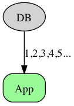
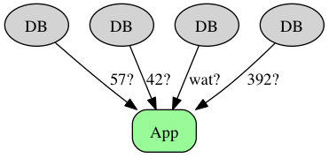
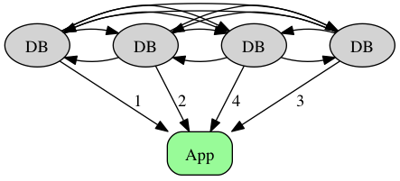
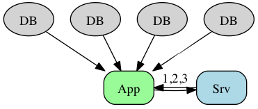

Simpleflake
Distributed ID generation
for the lazy
Created by Mali Akmanalp / @makmanalp
Me
Mali Akmanalp
Platform / Data Engineer
@Custommade
Unique IDs.
Simple, right?

let's say you have a database of silly cats ...
Need to tell cats apart
Normal
cat1, cat2, cat3 ...
Autogeneration
CREATE TABLE kittens (
`id` BIGINT AUTO_INCREMENT,
PRIMARY KEY(`id`)
);
But when you start getting more data ...
Sharded
Coordination
But now all your nodes have to talk
to (and maybe wait on) each other!
Ticket Server
a la Flickr
Still goes over the net
More infrastructure
SPOF (kinda)
There is
a simpler way...
Large
Random
Numbers!

UUID v4
128 bit random number
>>> import uuid
>>> uuid.uuid4()
UUID('74691173-e69d-440d-8172-dd63c97d1e87')
standard
great language / db support
but ...
B-Tree + Random == Bad
 http://blog.jcole.us/2013/01/10/btree-index-structures-in-innodb/
wish there was a timestamp based UUID ...
http://blog.jcole.us/2013/01/10/btree-index-structures-in-innodb/
wish there was a timestamp based UUID ...
UUID v1
236abc75-f7e5-11e2-bc8a-b88d1204f9a2
Number of 100-nanosecond intervals since the adoption of the Gregorian calendar in the West.

and besides ...
UUID v1
236abc75-f7e5-11e2-bc8a-b88d1204f9a2
3 2 1
- Timestamp backwards, no ordering
- Are strings
- Wasted bits for UUID version, dashes
- Are huge (128 bits)
- Don't fit in BIGINT
Snowflake
10765432100123456789
Timestamp + Machine ID + Sequence Number
- Time-ordered
- No coordination during generation
- Not huge (64 bits)
Snowflake
- JVM / Scala
- Zookeeper
- Thrift
more infrastructure ...
Startup life

I'm pretty sure our ops guy Wes time travels to handle what's already on his plate.

Simplify, simplify, simplify your ID generation scheme.-- Thoreau
Simpleflake
10765432100123456789
Timestamp (41b) + Random Number (23b)
- Snowflake knockoff
- Time-ordered
- No coordination during generation
- Not huge (64 bits)
Features
- Very simple == very fast
- No network delay
- No locking coordination
- No SPOF
- No state to keep track of
Usage
>>> from simpleflake import simpleflake
>>> simpleflake()
3594162604452825250L
Easy as pie
>>> from simpleflake import parse_simpleflake
>>> parse_simpleflake(3594162604452825250L)
SimpleFlake(timestamp=1375160370.606, random_bits=6768802L)
Collisions!

Chances of collision at 100 inserts / sec.
1.0787 x 10^-9
Collisions!
At avg. 100 inserts / second, chances you'll get at least two in the same millisecond:
PDF[PoissonDistribution[0.1], 2]
= 0.00452419
Collisions!
For two requests in the same millisecond, chances you'll get the same number out of 2^23:
n^2/2m = (2)^2/(2*2^23)
= 2.3842 × 10^-7
Even more collisions!
- (100 * 300 bytes) / second * 1 day
- = 2.6 GB / day
- = 1 TB / year
- = You better hire a DBA
Future?
Totally backwards compatible with snowflake.
The End!
There are other ways
- Consistent hashing
- HiLo
But they're a pain ...